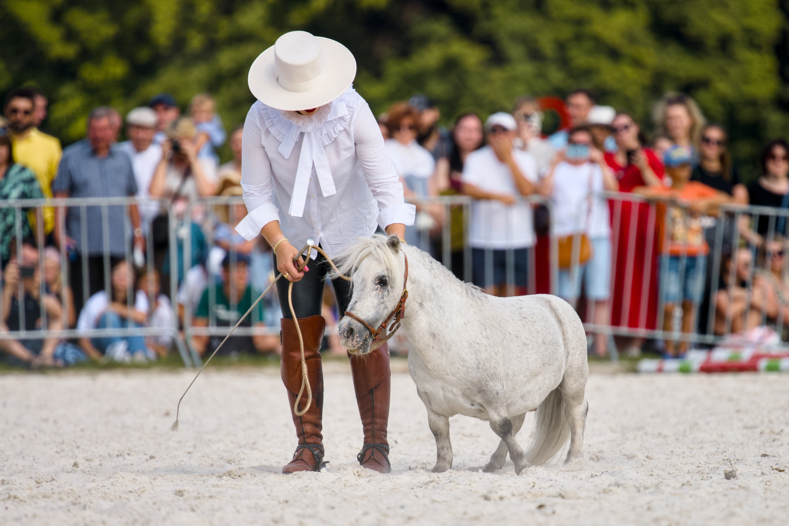
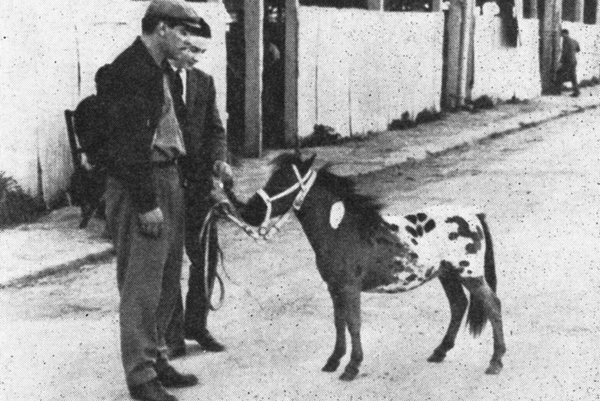
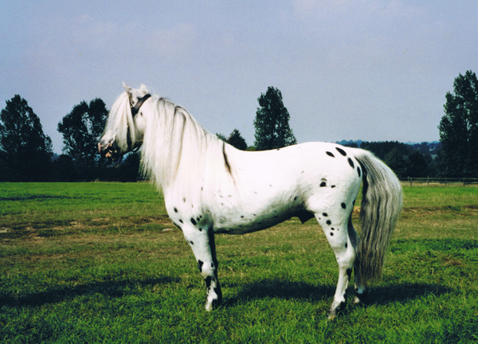
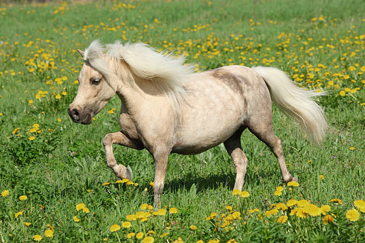

The Falabella: Argentina’s Miniature Horse, Scaled to Perfection
In the vast tapestry of horse breeds across the globe, the Falabella stands out not for power or speed — but for its charm, miniature proportions, and a fascinating history that mirrors Argentina’s equestrian soul. It is a breed defined not by what it can carry or how fast it can run, but by what it represents: generations of careful, devoted breeding translated into something genuinely rare.
Across six generations of a single family, the Falabella was shaped with extraordinary intention. The result is an animal that carries all the bearing and proportion of a full horse in a frame no taller than a large dog — and yet is unmistakably, undeniably a horse.
Origins: A Family Legacy in the Pampas
The Falabella’s story begins in the wide open grasslands of Argentina in the 1800s. It was here that Patrick Newtall, and later his son-in-law Juan Falabella, began experimenting with small native horses. Crossing Shetlands and small Thoroughbreds with Criollo stock, the goal wasn’t just size — it was soundness, proportion, and strength in miniature.
Juan’s son, Julio César Falabella, refined the breeding program, and by the mid-20th century the Falabella name was synonymous with the world’s smallest horse breed. True to form, the family kept the breeding records tightly held for generations, making the Falabella as much a family heirloom as a national treasure.

What Makes a Falabella?
Despite standing just 71 to 86 cm (28–34 inches) tall, Falabellas are true horses, not ponies — elegantly built, with refined heads, long manes and tails, and graceful, light gaits. You’ll find many with Arabian-style features, some with Appaloosa spotting, and others with sleek, jet-black coats. Their temperament? Exceptionally gentle, curious, and intelligent — ideal for close human interaction.
They aren’t dwarfed or stunted horses; they’re the result of generations of selective breeding for miniature, proportional conformation. That distinction has made them highly desirable across the globe — and sets them apart from any other small equine.
Falabella — At a Glance
- Height: 71–86 cm (28–34 inches) at the withers
- Origin: Argentina — bred on the Pampas since the 1800s
- Foundation: Criollo, Shetland Pony, and small Thoroughbred crosses
- Temperament: Gentle, intelligent, and highly sociable
- Colours: All colours — including Appaloosa spotting and bay, black, palomino, and pinto
- Classification: True horse (not a pony) — full horse proportions in miniature
- Key uses: Therapy work, driving, companionship, exhibitions
- Status: Relatively rare; most bloodlines trace to Argentina

Where You’ll Find Them Today
Although born in Argentina, Falabellas have trotted their way into hearts worldwide. You’ll find dedicated breeders across North America, Europe, and parts of Asia. However, their numbers remain relatively low, and most enthusiasts still source their breeding lines from Argentina.
Some ranches near Buenos Aires still proudly maintain descendants of the original Falabella bloodlines. Visiting one is like stepping into a living museum — where the breed’s legacy is preserved with reverence, and where each foal represents another link in an unbroken chain stretching back nearly two centuries.
“Owning a pure Falabella is akin to owning a rare work of art — a living jewel bred with the patience of generations.”

Their Role and Uses
Too small to ride (even for most children), Falabellas are ambassadors more than athletes. They find their calling in roles that prize presence, personality, and the quiet kind of connection that only comes with a genuinely gentle horse:
- Therapy work — visiting hospitals, aged care homes, and rehabilitation centres
- Driving competitions — pulling tiny carts with surprising flair and athleticism
- Parades and exhibitions — captivating crowds with their unique presence and perfect proportions
- Companions for larger horses — they make excellent and calming stablemates
And let’s not forget their role as status symbols. In some parts of the world — especially among collectors and equestrian aficionados — owning a pure Falabella carries the same weight as owning a rare work of art.
Cultural Curiosity: A Living Jewel of Argentina
In Argentina, the Falabella represents refinement, heritage, and the ingenuity of rural horsemen. Though it doesn’t gallop across polo fields or run in races, it holds a quiet spot of pride in Argentine culture. It’s not unusual to find a Falabella featured in folk festivals, tourist farms, or even as a symbolic pet of honour.
For travellers — especially equine enthusiasts — seeing a Falabella in its native land, perhaps among Criollos and gaucho traditions, is a rare and heartwarming experience. It is a reminder that not all of equestrian history was built on speed and conquest. Some of it was built on patience, curiosity, and love.
Related Stories

The Horses of the Camargue
Tough, white, and semi-feral, the Camargue horse is a living part of southern France’s wetland culture. This article explores the breed’s origins, traits, and working life with the Gardians.

The Andalusian Horse: Spain’s Noble Soul
For centuries, the Andalusian shaped empires, warfare, and the very idea of the noble horse. This article traces its journey from Iberian war horse to the foundation of modern dressage.